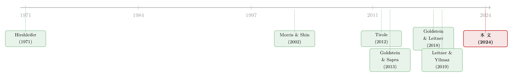

当所有银行都去猜同一张考卷：压力测试与系统的「单一栽培」
本文读的是 Rhee & Dogra (2024, Journal of Financial Economics)：监管者公开压力测试结果，能在危机中重建市场信心，却也会逼着银行都去持有「考试认可」的资产，让整个金融系统失去多样性——这就是所谓的「模型单一栽培（model monoculture）」。作者用一个三期模型证明，最优的披露政策对逆向选择的严重程度是 非单调 的：只有当逆向选择 极其严重 或 极其轻微 时才全盘公开，居中时反而 一点都不该披露。
1 一个让监管者左右为难的悖论
先讲一个真实的故事。
次贷危机之前，美国联邦住房企业监督办公室（OFHEO）对房利美（Fannie Mae）和房地美（Freddie Mac）做过一次基于风险的资本压力测试。测试的结论是：两家公司资本充足，安然无恙。可后来发生了什么？OFHEO 既低估了房价的跌幅，也低估了两家 GSE 对这一风险的暴露——实际违约率是模型预测值的 4 到 5 倍。2008 年 9 月，两家公司双双被认定资不抵债，而仅仅 六个月前，那场压力测试还把它们judged为「资本充足」（Frame et al., 2015）。
这件事戳中了压力测试的一个根本软肋：它没办法预知一切。测试只能用有限的几个情景，于是总会漏掉某些风险来源；即便是被纳入的情景，模型也未必能算准银行在其中的真实表现。
可这恰恰带出一个更深的悖论。
2009 年 5 月，美联储史无前例地公开了 SCAP（监管资本评估计划）每家银行的具体损失数字。事后看，这一招稳住了市场（Morgan et al., 2014）——公开（哪怕不完美的）信息，确实能在危机里重建对银行体系的信心。这是披露 好 的一面。
但 Bernanke（2013）和 Hirtle（2018）这些政策制定者却提出了一个忧虑：如果压力测试常态化、结果全盘公开，会不会催生一种叫「模型单一栽培」的副作用？也就是说——银行会扔掉自己（可能更高明的）风险管理系统，转而一门心思去「猜」监管者那张考卷，把投资组合配成监管模型认可的样子。结果，整个系统对那些监管模型 没 预料到的风险，集体裸奔。
这就是本文要拆解的那个核心张力：披露 (imperfect) 测试结果，既能在危机里恢复信心，又会诱使银行无视测试之外的风险，反而抬高了系统性风险。 监管者到底该不该公开？该公开多少？
这是一个典型的「信息设计（information design）」问题。接下来，让我们跟着作者的模型，一步步把这个悖论算清楚。
2 模型：两种风险，三类银行
模型有三个时点：\(t = 0, 1, 2\)。
先说银行和它们的「赌注」。 \(t=0\) 时，有一个测度（measure）为 1 的「好（good）」银行连续统。自然先随机抽出一个状态 \(\omega \in \{G, D\}\)，其中 \(\Pr(\omega = G) = p\)。这两个状态代表两种不同的危机情景，真相要到 \(t=2\) 才揭晓。每家好银行要在两个项目里挑一个：
- 项目 \(\gamma\)：若 \(\omega = G\) 则在 \(t=2\) 回报 1，若 \(\omega = D\) 则一无所获；
- 项目 \(\delta\)：只在 \(\omega = D\) 时回报 1。
这里的设定是全文的灵魂。状态 \(G\) 是 监管者理解得很透、且写进了压力测试模型的那种危机；状态 \(D\) 则是 监管者的模型没覆盖到的那种。于是：
- 选 \(\gamma\) = 选一个对「监管模型所捕捉的风险」稳健的组合，等价于「跟监管者用同一套风险模型」；
- 选 \(\delta\) = 选一个在监管盲区里反而能扛事的组合，等价于「用一套不一样的风险模型」。
再说捣乱的人。 好银行选完之后，一群测度为 \(b \ge 0\) 的「坏（bad）」银行进场。它们的项目（称为类型 \(\beta\)）在 任何 状态下都产出为零，但能给坏银行自己带来一份私人收益，所以它们总是想方设法把项目续下去。关键在于，\(b\) 是一个随机变量，服从定义在 \([0, \infty)\) 上的连续分布 \(F(\cdot)\)——这个 \(b\) 就是「逆向选择有多严重」的刻度。\(b\) 高，意味着浑水摸鱼的坏银行多，市场更不敢放贷。
然后是融资环节。 \(t=1\) 时，所有银行（包括坏银行）必须筹到 \(x \in (0,1)\) 美元才能把项目续下去，办法是向测度为 1 的外部投资者发债。作者假设
$$x < \min\{p,\ 1-p\},$$
这保证了投资任何一个 好 项目（\(\gamma\) 或 \(\delta\)）的净现值都为正。
投资者是 风险厌恶 的，效用函数为
$$U(c_1, c_2) = c_1 + p\log c_G + (1-p)\log c_D,$$
其中 \(c_G, c_D\) 是 \(t=2\) 在两个状态下的消费。注意这个对数效用的含义：投资者想跨状态平滑消费，所以理想情况下他们希望同时持有 \(\gamma\) 和 \(\delta\) 两类银行的债——这样无论 \(G\) 还是 \(D\) 来临，手里都有还得上钱的银行。换句话说，从社会福利看，一个「多样化」的银行系统才是最优的：在每个状态下都有足够多的银行能偿付，投资者的消费才不会大起大落。
把这一点记牢：分散化之所以有价值，根子在于 投资者风险厌恶、想跨状态平滑消费。后面会看到，正是披露政策动摇了这个分散化。（关于「异质性/分散本身就是稳定器」的另一种讲法，可参见《异质性，反而是金融体系的「稳定器」？》。）
最后是监管者的那只「不完美的眼睛」。 每家银行的类型是私人信息，这制造了逆向选择。监管者能做压力测试，判断一家银行的项目在状态 \(G\) 下是否兑付，却无法判断在状态 \(D\) 下的情况。形式上，对每家银行 \(k\)，监管者拿到信号 \(\tau_k \in \{0,1\}\)：
$$\Pr(\tau_k = 1 \mid \theta_k = \gamma) = 1,\quad \Pr(\tau_k = 1 \mid \theta_k = \delta) = 0,\quad \Pr(\tau_k = 1 \mid \theta_k = \beta) = 0.$$
读这三个等式：压力测试只能把 \(\gamma\) 从其余两类里挑出来，却分不清 \(\delta\) 和 \(\beta\)。 这正是悖论的技术内核——那些选了「监管盲区组合」的好银行（\(\delta\)），在监管者眼里和纯粹的坏银行（\(\beta\)）长得一模一样。
监管者能选的，是一个披露概率 \(\alpha\)。她承诺一个政策 \(\alpha: [0, \infty) \to [0,1]\)，\(\alpha(b)\) 表示「在坏银行测度为 \(b\) 时，一家 \(\gamma\) 银行被公开的概率」。若某银行确为 \(\gamma\)，则以概率 \(\alpha\) 发出消息 \(\sigma_k = 1\)（「通过」），以概率 \(1-\alpha\) 报 \(\sigma_k = 0\)；若是 \(\delta\) 或 \(\beta\)，监管者没有任何信息，一律报 \(\sigma_k = 0\)（「未通过」）。
这里有个漂亮的制度映射：
- \(\alpha(b) = 1\)（永远全盘披露）≈ 常态化的压力测试，如美国的 DFAST、CCAR；
- 只在 \(b\) 高时才披露 ≈ 危机时相机进行的压力测试，比如 2009 年的 SCAP。
至关重要的一点：监管者在好银行选项目之前（\(t=0\) 之前）就要 commit 到整个政策函数 \(\alpha(\cdot)\)。正是这个承诺，让披露政策能反过来塑造银行的事前选择——这也是「单一栽培」得以发生的机制前提。（关于监管「承诺」这根缰绳的力量，另见《规则还是相机抉择？——给银行资本监管装上一根「承诺」的缰绳》。）
3 date-1 的定价：坏银行如何「毒化」了债券价格
先看 \(t=1\) 资本市场的局部均衡。设有测度 \(g\) 的好银行选了 \(\gamma\)，\(1-g\) 选了 \(\delta\)。监管者以概率 \(\alpha\) 公开 \(\gamma\) 银行，市场就被切成两个子市场：
- 「通过」组（\(\sigma = 1\)）：清一色 \(\gamma\) 银行，测度 \(\alpha g\)；
- 「未通过」组（\(\sigma = 0\)）：测度 \(1 - \alpha g + b\)，里面混着没被公开的 \(\gamma\)（测度 \((1-\alpha)g\)）、全部 \(\delta\)（测度 \(1-g\)）、以及全部 \(\beta\)（测度 \(b\)）。
投资者对两组债分别下单 \((\phi_1, R_1)\) 和 \((\phi_0, R_0)\)（\(\phi\) 是获得融资的银行比例，\(R\) 是毛利率）。把投资者的效用代入、对 \(\phi_0\) 与 \(\phi_1\) 求一阶条件，得到两条欧拉方程。第一条很干净：
$$\frac{p}{c_G}\, R_1 = 1.$$
意思是，「通过」组里全是 \(\gamma\) 银行，它们只在状态 \(G\) 兑付，所以这条债的定价只取决于 \(G\) 发生的（风险加权）概率。
真正有戏的是「未通过」组的那条欧拉方程——它把整个逆向选择问题浓缩成一行：
读这条方程的方法是：一个「未通过」的银行，到底值多少钱，取决于它三种身份的混合概率。 当坏银行测度 \(b\) 越大，第三项（\(\beta\) 的权重）就越重，而这一项的兑付是 \(0\)；为了让等式仍成立，要么利率 \(R_0\) 被推得很高，要么融资比例 \(\phi_0\) 被压得很低——这就是 信贷配给（credit rationing）。一旦 \(b\) 高到某个临界值，投资者干脆不愿给「未通过」组的任何银行放贷，生怕喂了坏银行。
到这里，第一个结论已经呼之欲出：
披露压力测试结果，总能在事后（ex post，即把银行的项目选择视为既定时）提高社会福利。 它通过两个渠道：第一，把「通过」的 \(\gamma\) 银行识别出来、让它们获得充分融资，消除了它们面对的逆向选择；第二，市场明白「未通过」的银行更可能是坏类型，于是收紧对它们的放贷，减少了对坏银行的浪费性融资。而且，逆向选择越严重（\(b\) 越大），披露的这份事后好处就越大。
这正好对应了 SCAP 的现实效果。看起来，监管者应该毫不犹豫地全盘公开才对。
4 反转：披露如何亲手「驯化」了整个系统
但真正关键的一步，在于把视角从 \(t=1\) 拉回 \(t=0\)——去问那个被 commit 的政策 如何改变了好银行最初的选择。
设想全盘披露（\(\alpha = 1\)）。好银行心里清楚：拿到便宜融资的 唯一 办法，就是选 \(\gamma\)（「认可」项目）、从而在测试中「通过」。如果它选了 \(\delta\)（监管盲区项目），那就 必定 通不过测试，沦落到「未通过」组里和坏银行混在一起，承受高昂的借贷成本。
于是，尽管 \(\delta\) 这种「分散化」项目从社会角度看是好东西——它能让银行系统在 两种 危机情景下都保持资本充足——可没有哪家好银行愿意主动去选它。结果，过多的银行一窝蜂选了 \(\gamma\)，银行系统变得高度趋同。这就是「模型单一栽培」：全盘披露，反而让整个系统对监管模型忽视的那个风险（状态 \(D\)）集体暴露。
这个机制有一个可检验的实证含义：压力测试披露应当抬高被测银行投资组合的相似度——这与 Bräuning 和 Fillat（2019）的经验发现一致。
注意这里的因果链：监管者本意是「用信息消除逆向选择」，却因为 承诺在前、银行选择在后，让信息政策变成了一根指挥棒，把所有好银行赶向同一种组合。好的事后工具，制造了坏的事前激励。
那么，权衡之下，最优政策长什么样？
5 核心结果：一条「砰-砰（bang-bang）」的非单调规则
作者的主结果是：最优披露政策对逆向选择严重程度（即 \(b\)）是非单调的，而且呈「砰-砰」结构——要么全披露，要么零披露，没有中间地带。 具体地：
当逆向选择 非常严重 或 非常轻微 时，监管者应当公开 所有 「通过」的银行；而在两者之间的区域，监管者 完全不该披露 任何结果。
为什么会这样？分两头来看。
第一头：逆向选择严重到出现信贷配给。
此时多披露一家「通过」银行，既有事后好处（缓解逆向选择），也有事前成本（鼓励好银行少选 \(\delta\)）。但关键的洞察是：披露的边际福利成本，是随披露程度递减的。 如果监管者只公开寥寥几家「通过」银行，那么「公开确认为好」的银行极其稀缺，它们能以极低的利率借钱——这个「稀缺溢价」会强烈诱使好银行去选 \(\gamma\)。可随着监管者公开得越来越多，这些银行不再稀缺，诱惑也随之减弱。
所以——部分披露是劣的：一旦决定要披露，就该把所有「通过」银行 全部 公开，好把「通过者」赚取的稀缺溢价压到最低。又因为披露的事后好处随 \(b\) 递增，于是当逆向选择足够严重时，监管者会选择全盘公开。
第二头：逆向选择轻微到好银行总能拿到融资。
此时披露 没有 缓解逆向选择的事后好处了；它唯一的作用，就是影响好银行的事前选择、进而影响单一栽培。直觉上你会觉得：那干脆别披露，让大家自由分散就好。
可这里藏着全文最反直觉的一笔——当坏银行的比例 \(b\) 极低时，披露反而能改善分散化。
怎么回事？回想好银行为什么不敢选 \(\delta\)：因为怕通不过测试、落到「未通过」组承受高成本。但如果投资者能 识别出 这些 \(\delta（「未受青睐」）银行，反而会愿意以极优惠的条件借钱给它们——因为 \)\delta$ 是对「监管模型没捕捉的风险（状态 \(D\)）」的一份对冲。而监管者可以 间接地 帮投资者识别：当坏银行极少时，把所有「通过」的 \(\gamma\) 都公开，那么剩下的「未公开」银行就 几乎肯定是 \(\delta\) 类，它们于是享有稀缺溢价，好银行选 \(\delta\) 的激励被部分恢复，单一栽培反而缓解了。
可这套逻辑只在 \(b\) 极低 时成立。一旦坏银行比例不够小，「未公开」组里就掺进了不少 \(\beta\)，「未公开 ≈ 优质 \(\delta\)」的推断失灵，披露改善分散化的正效应随之消失——这时零披露才是最优的。
把两头拼起来，就得到了那条非单调的曲线：两端全披露，中间零披露。 这恰好为现实中两种制度——「危机时相机披露」（对应 \(b\) 高的那一端）和「常态化披露」——提供了一个统一的理论框架。
6 文献脉络
把这篇论文放回它所在的那条河流里，会看得更清楚。
源头要追到信息经济学的两块基石。Hirshleifer（1971） 早就指出，公开信息有私人价值，却未必有社会价值——有时把不确定性揭开，反而毁掉了人们彼此保险的机会。Morris 和 Shin（2002） 进一步在协调博弈里论证：公共信息是把双刃剑，它既传递基本面、又会被过度依赖，社会价值可能为负。这两篇，正是「披露未必是好事」这一直觉的理论母体。

接着，这条直觉被引入到 银行干预与逆向选择 的语境。Tirole（2012） 和 Farhi 与 Tirole（2012） 讨论了公共干预如何修复被逆向选择冻住的市场；Faria-e-Castro、Martinez 和 Philippon（2016） 则把「信息披露 vs. 财政救助」放在一起，揭示了披露在挤兑和柠檬之间的权衡。
然后，「压力测试披露」自己长成了一支独立的文献。Goldstein 和 Sapra（2013） 系统梳理了披露测试结果的成本与收益；Goldstein 和 Leitner（2018） 用机制设计的语言论证，最优披露往往是「部分」的——既不全说、也不全藏。Leitner 和 Yilmaz（2019） 直接研究「监管一个模型」时银行如何博弈，Leitner 和 Williams（2023） 则讨论了模型保密（model secrecy）的价值。
但真正关键的一步——也是本文的位置——在于：以往这条线大多盯着「披露如何缓解事后的逆向选择」，而 Rhee 和 Dogra 把镜头转向了披露的事前后果，即它如何重塑银行最初的组合选择、催生「模型单一栽培」，并由此推出那条非单调的最优政策。它与 Williams（2017） 关于压力测试与银行组合选择的工作、以及 Bräuning 和 Fillat（2019） 的经验证据互相呼应，但把权衡的两端——信心与多样性——第一次完整地装进了同一个信息设计框架里。
7 评论与延伸（Q&A + 研究方向）
(a) 几个可能的疑问
Q：这里的「模型单一栽培」，和我们常说的银行「同质化、羊群行为」是一回事吗？
不完全是。普通的同质化可以来自相同的激励、相同的监管资本要求或纯粹的羊群心理。本文的 monoculture 有一个 非常具体的机制：它是 披露政策 + 监管承诺 共同诱发的——因为只有「通过测试」才有便宜钱，银行才放弃了自己（可能更优）的风险模型去趋同。换句话说，它是监管信息政策的 内生 产物，而非外生偏好。
Q：「事后总该披露、事前却不该」，这个矛盾的根源到底在哪？
根源在 承诺（commitment） 与 时间一致性。给定银行已经选好了组合（事后视角），披露永远是好的，因为它只负责消化既有的逆向选择。但监管者必须在银行选择 之前 就 commit 到政策，而这个政策会改变银行的选择本身。本文的全部张力，就来自「一个对既定局面最优的工具，会扭曲产生那个局面的激励」。
Q：那条「砰-砰」规则——要么全披露要么零披露——是不是模型设定太特殊才出来的？
它来自一个相当稳健的力学：披露的边际福利成本随披露程度递减（因为「通过者」的稀缺溢价随公开数量稀释）。只要这个单调性成立，「部分披露」就总是劣于「要么全、要么零」。作者在第 5 节把投资者换成风险厌恶系数大于 1 的 CRRA 效用，结论定性不变，说明它不是对数效用的人为产物。
Q：最反直觉的「极低 \(b\) 时披露反而改善分散化」，会不会太脆弱？
诚实地说，是的，它确实脆弱。这个效应严格依赖「未公开 ≈ 优质 \(\delta\)」这个贝叶斯推断，而该推断只在坏银行 极少 时才靠得住。作者自己也强调，一旦 \(b\) 不够小，效应立刻消失、零披露重新最优。所以与其说它是政策建议，不如说它是一个揭示机制的「极限案例」。
Q：模型里假设「不利状态 \(D\) 总会实现」，这会不会把结论架空？
这是为了 tractability 的简化（等价于把「正常时期 vs. 罕见冲击」里的冲击概率设为聚焦在危机上）。它的代价是模型只刻画危机情景下的结果。好处是把注意力收束到「压力测试真正关心的那种尾部」，对定性结论影响不大；但要做福利的定量校准，这一步需要被放松。
Q：本文说披露会抬高组合相似度，可现实里 CCAR 还直接惩罚未通过的银行（禁分红、禁回购），这会不会让结论更强还是更弱？
更强。作者刻意 抽掉 了这些直接惩罚，只保留「投资者更不愿借钱给未通过者」这一间接成本。如果把直接惩罚加回来，选 \(\delta\) 的代价更高，好银行更不敢分散——单一栽培只会更严重。所以本文的主结论是一个 保守下界。
(b) 几个可能的研究问题与提案
1. 把「模型单一栽培」搬到公司债持有人结构上检验。 【经济故事】本文是纯理论，但它给出了一个干净的实证假说：压力测试披露 → 被测银行组合趋同。能不能用更细的资产层面数据，看银行（乃至受其影响的债券基金、保险公司）在 DFAST/CCAR 常态化前后，对 公司债 的持仓相似度是否上升？尤其是那些「监管情景未覆盖」的信用风险敞口（如特定行业、特定久期）是否被系统性减持。 【可行性】中。数据上可用 Call Reports、FR Y-14、以及债券层面的 eMAXX/保险 NAIC 持仓；识别上可借助 CCAR 覆盖门槛（资产规模 $500 亿美元）做断点或 staggered DiD。难点是把「监管盲区资产」操作化。
2. 外资持有人是否充当了「天然的 \(\delta\) 银行」？ 【经济故事】本文的核心是：系统需要有人去持有「监管模型忽视的风险」。一个自然的猜想是，不受美国压力测试约束的外资机构，恰好可能扮演这个「分散者」角色——它们用一套不同的风险模型，反而持有了本土银行集体回避的敞口。如果属实，那么外资退出（如地缘冲击、资本管制）会同时削弱美国信用市场的 多样性。 【可行性】中偏低。需要 TIC 数据 + 债券层面外资持仓，识别外资「逆向持有」颇难，且「监管盲区」难以外生定义。但方向上与本博客关注的外资持有人 / 信用市场流动性主题高度契合。
3. 披露政策的非单调性，能否在压力测试「通过率」的时间序列里看到痕迹？ 【经济故事】本文预测，监管者在逆向选择 极严重 与 极轻微 时都倾向全披露、居中时收手。如果把每年 SCAP/CCAR 的披露详尽程度（披露的银行数、损失明细的颗粒度）与当期市场压力指标（如银行不透明度、信用利差）对照，能否识别出这条 U 形关系？ 【可行性】中。披露颗粒度可手工编码，市场压力有现成指标（Flannery et al., 2013 的 opacity 度量可直接用）。样本只有十余年、且监管者目标多元，是主要障碍。
4. 「考试趋同」与流动性：单一栽培是否在危机中放大了抛售螺旋？ 【经济故事】如果披露把银行的组合捏成同一个样子，那么当 \(D\) 状态真的降临，所有人会 同时 想卖同一批资产——单一栽培直接转译成 流动性的脆弱。这把本文的「多样性」语言接到了 fire-sale 文献上。 【可行性】中。可用债券层面的拥挤度（crowdedness）指标 + 危机窗口的价格冲击来检验。识别上需要把「因披露而趋同」与「因共同冲击而趋同」分开，难度不小。
8 参考文献
Bräuning, Falk, and Jose L. Fillat (2019). Stress testing effects on portfolio similarities among large US banks. Federal Reserve Bank of Boston Research Paper Series, Current Policy Perspectives No. 19-1.
Faria-e-Castro, Miguel, Joseba Martinez, and Thomas Philippon (2016). Runs versus lemons: information disclosure and fiscal capacity. Review of Economic Studies 84(4), 1683–1707.
Farhi, Emmanuel, and Jean Tirole (2012). Collective moral hazard, maturity mismatch, and systemic bailouts. American Economic Review 102(1), 60–93.
Flannery, Mark J., Simon H. Kwan, and Mahendrarajah Nimalendran (2013). The 2007–2009 financial crisis and bank opaqueness. Journal of Financial Intermediation 22(1), 55–84.
Frame, W. Scott, Kristopher S. Gerardi, and Paul S. Willen (2015). The failure of supervisory stress testing: Fannie Mae, Freddie Mac, and OFHEO. Federal Reserve Bank of Boston Working Paper 15-4.
Goldstein, Itay, and Yaron Leitner (2018). Stress tests and information disclosure. Journal of Economic Theory 177, 34–69.
Goldstein, Itay, and Haresh Sapra (2013). Should banks' stress test results be disclosed? An analysis of the costs and benefits. Foundations and Trends in Finance 8(1), 1–54.
Hirshleifer, Jack (1971). The private and social value of information and the reward to inventive activity. American Economic Review 61(4), 561–574.
Leitner, Yaron, and Basil Williams (2023). Model secrecy and stress tests. Journal of Finance 78(2), 1055–1095.
Leitner, Yaron, and Bilge Yilmaz (2019). Regulating a model. Journal of Financial Economics 131(2), 251–268.
Morgan, Donald P., Stavros Peristiani, and Vanessa Savino (2014). The information value of the stress test. Journal of Money, Credit and Banking 46(7), 1479–1500.
Morris, Stephen, and Hyun Song Shin (2002). Social value of public information. American Economic Review 92(5), 1521–1534.
Rhee, Keeyoung, and Keshav Dogra (2024). Stress tests and model monoculture. Journal of Financial Economics 152, 103760.
Tirole, Jean (2012). Overcoming adverse selection: how public intervention can restore market functioning. American Economic Review 102(1), 29–59.
Williams, Basil (2017). Stress tests and bank portfolio choice. Unpublished manuscript.
最后说说我的判断。
贡献。 这篇论文最漂亮的地方，是把一个被政策圈反复念叨却没人形式化的担忧——「模型单一栽培」——第一次装进了一个干净的信息设计模型，并且推出了一个 结构清晰、可映射到现实制度 的结论：最优披露对逆向选择严重度非单调，呈砰-砰规则。它把「危机时相机披露」和「常态化披露」这两种看似对立的实践，统一成同一条曲线的两端。这种「用一个机制讲透两种现实」的能力，是好理论的标志。
对识别（这里是机制稳健性）的担忧。 三点。其一，「\(D\) 状态必然实现」的简化让模型只活在危机里，要谈常态下的福利就力不从心。其二，那个最迷人的「极低 \(b\) 时披露改善分散化」的反转，太依赖一个脆弱的贝叶斯推断，更像思想实验而非政策处方。其三，全文是纯理论，所有「量级」都是参数条件而非数据——它给了我们假说，却没给我们一个被检验过的世界。
后续想看到什么。 我最想看到的，是有人把那条核心实证含义——披露抬高组合相似度——拿到资产层面的数据里硬碰硬地检验，最好能进一步追问：这种被监管「驯化」出的趋同，是否在下一次危机里真的转译成了更猛的流动性踩踏？如果答案是肯定的，那么「为了重建信心而全盘披露」这件看似无害的好事，账单可能要在多年以后、以系统性风险的形式，悄悄结清。